Week 5: 18/4/2022 - 25/4/2022¶
This week begins with a holiday, Lunes de Pascua, and is a little off the norm for classes. Because there are no Monday classes this week the Expanish folks are thinking we’re doing some sort of field trip in preparation for Saint Jordi’s day next week. The equivalent of Valentines Day in the US except the traditional gifts are books and roses. We’ll see how it all shakes out.
18/4/2022 Lunes Pascua¶
Note to Self: We have come to the realization that for us figuring out how to avoid the mobs of people as so many of these venues is important to our survival. We absolutely recommend getting up as early as you have to in order to be there when the venue opens. It feels like you get about an hour of reasonable peace and quiet and then it just gets crazier and crazier. A second point is that locals are always getting their tickets online and almost never show up expecting to by tickets at the venue. When we left at 11:30 from Parc Guell tickets for the day were sold out. Three days ahead we could buy tickets for any entrance time. By Saturday Emma could only get tickets at 1:00. This must get much worse during actual tourist season.
We got tickets to come see Parç Guell today because it was so hot on Friday when we thought of going originally. Today was a good bit cooler and we got tickets for 9:30 which is the opening time for the parc. I wasn’t sure how the metro would be running today but it was quite smooth so we had time for coffee and a croissant after we got off the metro. Only a few folks on the sidewalks climbing up to the parc. My legs still remembered the effort anyway. The entrance to the parc is at the bottom of the space and we slowly made our way around the lower area. So many things to notice. To get standard ceramic tiles to flow smoothly aroung the curved surfaces that Gaudi liked the tile was ‘smashed’ into about 30 regularly sized pieces and then reassembled on the curved surface with some extra space between the pieces so the mortar would hold it well. Even on flat walls with larger color blocks they surface was never allowed to be flat. On a particular wall I remember the white zones were all curved out and the adjacent colored sections curved inwards. The definition of an organic surface. The trails varied from smooth concrete pavement to packed dirt to very irregular cobble or exposed agregate materials. Definitely gotta watch your feet in a lot of places.
The first parts we walked through made us wonder whether the Peterson Rock Garden between Redmond and Bend took some inspriration from this site. The fantastic shapes and alcoves were all constructed from essentially rock rubble mortared together to form columns and walls. But not just simply wall and collumns because each element had additional textural form created as the rocks were laid up. It is impressive to see and feel a clear sense of spiralling twist using such an irregular material as rubble.
Natural rock work at Parç Guell

A particular example that we loved was this figure as one of the columns. Notice also the stalactite forms hanging between the columns. One almost feels that the project manager just handed out a sketch of how each column should look and the workers just did it. Having worked a little with rubble at home I find the whole concept amazing.
Column as a figure

The whole experience of wandering around in these structures tended to make one look everywhere wondering what unexpected thing you might see. A case in point were some of the basins that were set into the curved back wall of the arcade. Dawn noticed that these basins which held some small plantings of fern like plants also had drain holes in the back. Since the basins where within the arcade they would never get natural rainfall though they do get plenty of light. It seems possible that drains to relieve hydrostatic pressure from behind the wall would keep the basins moist. Coco fiber mats in the botto of the basins keep the soil from flushing away between the cracks.
A lost soul in the parc…

After wandering around and exploring various parts of space we came back down to the Plaça de la Natura which is a large open plaza with a gorgeous Gaudi bench encircling the front edge of the space. Dozens of people all over the bench making it hard to appreciate and the lovely view of Barcelona (much like the view from the viewpoint last Friday) kept it crowded with people. As we went down the outside to get to the Sala Hipóstia we got a different and lovely view of the backside of the bench and the gargoyles.
The back of the Plaça de la Natura bench….

The Sala Hipóstia is a stunning space with columns that lean in along the edge and vertical columns internally. The ceiling is all tiles circular coves. At various points there are colorful shields that occupy some of the ceiling coves in colors and forms that suggest being underwater (see below). It’s very lovely. A particular effect of having many small shiny surfaces on the curved surfaces of the coves is that from any location with in the cathedralesque space you would see light reflected from many different parts of the ceiling. If the ceiling were flat the reflections would be more uniform in shape and predictable but with the curves each reflection had a unique shape and placement within the cove that was very engaging.
Ceiling of the Sala Hipóstia

The sheer number of people in this part of the parc quickly became overwhelming and we were grateful to be headed over to take a look through Gaudi’s house at the parc. The museum (as Gaudi’s house is labeled) is a very lovely structure but what was most engaging for us were the hooped pathway covers that were formed of steel T-bar (about 2 cm on each ‘leg’) that were embedded in concrete at the ground level and had welding steel spine down the top. The flat top of the T faced into the pathway and the stem of the T faced outwards. Light weight stainless cables were threaded longitudinally through the stem to provide support for the wisteria or other viney plants that grew to be the cover. We’re thinking we might try this with the hops and some grapes as well given how vigorously our hops and grapes grow. In the house there were lovely examples of the custom furniture he designed for every project. The little details were amazing and I should have taken pictures but I didn’t. The grouped seating elements (not sure whether to think of them as hardwood sofas or what) are beautiful but seem remarkably oversized for the scale of human beings. When I sat in one of the chairs at Casa Batllo I was swimming in it (not sitting on furniture at the museum). His single chairs had a more normal sense of scale. Even his church pews for the crypt (gotta figure out where that crypt is) were generous with their space for each individual. This aligns with his attention to the spiritual experience of the person using the pew. The pews are for two individuals and they are shaped so the users face gently away from each other to provide more privacy during prayer/meditation. Uses more space in the room but the quality of the experience for the user would be wonderful and introspective.
Lots of thoughtful details in the window work and other interior details caught my eye. There was a lovely hyperbolic arch that welcomed you into the bathroom even thought the primaryu walls and ceiling were traditionally rectangular. Many of the windows have louvered panelson the outside to allow air flow while restricting solar gain. There were inner panels that could be closed for privacy. When the windows open they tend to fold in the middle so they don’t intrude so far into the room. Thoughtful little touches. Between that and the doors it tempts me to foolish attempts with our master suite remodel.
As we left the museum we were distracted (as we often are) by hearing some music. As is our custom we followed the sound of the music until we found a small flamenco group performing in one of the arcades. 4 people, two guitarists, a drummer (cajon and found objects), and a dancer. Providing all the percussive background with a cajon and other objects was also what the group at the Palau de la Musica did on Saturday night. This was not as polished but plenty of energy and passion. The crowd was delighted. Dawn got some pictures and bought some CD’s.
Flamenco Dancer

We made our way out muttering about the crowds but at least it was cool with a breeze which made it much more bearable. We continue to be struck by the current fascinating with posing in front of everything. It’s not everyone but so many folks seem to feel a need to preen and strut in front of every ‘famous’ object that it is really obnoxious. The tic tok’ers and instagram influencers who want to show off their dance moves or hip dress stylings in some ‘cool’ location are irritating in a different way. Sort of feels like the world is just a backdrop or stage on which to be continuously performing. Under their feet and in front of their noses are marvelous works of craftsmanship that provide endless opportunity to introspection and examination to understand the skill and workmanship along with clues to different visions and perspectives on the wonderful world we live in. I’m definitely a codger now!
We stopped off at a cafe just out of the tourist drag and had a good lunch. Had yet another form of ensalada ruso and when I asked for a beer I got an Oktoberfest sized tankard. Yikes. All was tasty and eventually we headed home to do HW, update journals, study spanish, and just catch up with life.
Gotta remember not to forget to renew our phones in the next couple of days and get our new T-usual metro cards.
19/4/2022 Tuesday¶
Tuesday started with Music class followed by Dawn’s Kettlebell class. Today is apparently the last day for the mask mandate here in Catalonia except for public transit and hospitals and one other place that no one can remember. It will be interesting. One student had COIVD this weekend but was already separate from the rest so no risks that we can tell.
After Kettlebell class we went home for a snack and then I went back to pick up Dawns shoes at the gym on my way to pick up our new metro cards. Us ‘not so young ones’ can only get one month passes while the traditional age students get a 90 day pass, Actually a blessing to get a new pass every 30 days since they tend to quit working when they get bent or wet and stop working at relatively inconvenient moments when there is nobody at the station office to replace it. Replacement is actually pretty easy - you bring the pass that’s not working and your passport that matches the number on the T-usual pass and they generate a new card with the same passport number and expiration date. Takes only a few minutes if the station isn’t crowded.
When I got back we went over to Lanto to have lunch with Brian and Emma. The food was fabulous again as we expected. Brian and Emma seemed to very much enjoy it. Update on restaurant details. The owner is Ricardo along with his wife Arica. Simone is the Italian at the grill and prep table. Lanto is Ricardo and Arica’s son. Ricardo apparently spent 10 years cooking in Londay as a chef and the some years in Denmark before coming to Barcelona. We are very grateful that they are so convenient.
We had lovely conversations about Parc Guell that we both visited at different times yesterday. It was also fun to compare perspectives and insights that we feel like we’ve noticed being in Spain for a time. Emma had been in Cadiz for a month while we were in Barcelona. Brian is a quick study so his 3 days count as a month for me.
After Brian and Emma headed off to their evening plans Dawn and I went down to the local Yoigo store to try to get our phones/SIMs renewed. The Yoigo app didn’t really give me an option to do this so visiting a local store seemed like a good idea. This was one of those conversations that I felt pretty overwhelmed by and feel like I missed a bunch of content. Dawn is right that it might have been a good idea to try the conversation in English as the salesperson offered but I am admittedly a bit stubborn about trying to manage as best I can in the local language. We had used less than 2 GB of our 20 GB plan which seems crazy. Apparently he dropped our plan to 2 GB which should work fine but I was happy to keep paying for 20 GB (15€/month). I think he suggested that our phones will automatically charge our credit card each month unless we change something. In addition we put 20€ on each phone which I hope the phone will access to pay our fee for the plan if the credit card isnt accessible. We’ll know tomorrow what’s up since my plan is supposed to run out sometime tomorrow. We’ll see.
Came home and chilled and went to bed.
20/4/2022 Wednesday¶
Astronomy class in the morning and Spanish class in the afternoon. In between we stopped at We Love Italy. This is a small restaurant near the Spanish classroom that the other students found and recommended last week. We found it tasty and reasonable cost as well as friendly on every level. We generally agreed with the student assessment.
Today they combined both our classes into a single classroom and did a number of activities related to Sant Jordi’s Day which is Saturday. Some of the take aways are:
Single rose not a bunch of rosesl, the bunch is too ostentatious, makes you look like you want something.
The rose comes with a stalk of wheat to conote fertility – wasn’t aware of this at all.
April 23 also aligns with International Book Day which is connected to Shakespeare’ and Cervantes’ deaths.
Sant Jordi is the patron saint of Catalonia but it is not a day off from work even if it falls during the week.
Lots of the symbolism at Casa Batllo is tied to the legend of St George and the dragon. That was interesting.
The class created alternative stories of Sant Jordi and the dragon – Roy was especially impressive along with Dawn in enacting alternative vision of the story. Well done all!
After Spanish we walked back up to the Origo bakery to get some more bread and then down to see if the L5 line really was back in operation. Turns out it was - whew. Had a good dinner and then let Dawn lead us to Life Drawing in el Born. Almost ready for a solo flight there, soon.
A couple of days ago when doing laundry we dropped one of Dawn’s socks. It was one of a pair that Denali got for Dawn we were a bit sad. After waiting to see if the folks on who’s terrace it landed would put in in the stairwell or on the mailboxes (we could see that it got picked up) Elizabeth suggested that we lower a string with a note. Dawn did just that lowering a string 4 stories with the other sock and a note asking if they could attach the missing sock. When I pulled it up tonight to keep it from being rained on there were both socks. Mission Accomplished!! Very cool and amusing though they didn’t add anything to the note. Perhaps they will acknowledge us at some point in the future.
Hard to know what we’ll do tomorrow since it’s supposed to be raining pretty hard.
21/4/2022 Thursday¶
Slept in late since there was nothing pressing and heavy rain was predicted. The rain has come to pass so we are heading off to visit some of the contemporary art museums today. We decided to start at the MACBA (Museo de Arte Contemporaneo de Barcelona which has a large collection of significant contemporary art. Time to go learn something! There was also a show of weavings from Teresa Lanceta who is an artist from the Raval who spent a lot of time working in Raval. We took the metro to Catalunya and then walked down the right side of La Rambla to the second ‘alley’ which takes you across to the museum. Along the way I was reminded that there is a print studio on that street that I thought Dawn might like. I need to take a look at that note again.
It was only raining lightly when we arrived so we weren’t too wet. Dawn suggested we start on the top floor and work our way down. The top floor was the Teresa Lanceta show which was really interesting and had come very beautiful rugs that were the artists reaction to a range of projects. It is an amazing body of work and knowing how much time it takes to create some of these rugs it represents someone who is working at the creative process all the time to get this much done. Very nice. The image below is a sample of a group of works she hung together for this show.
Teresa Lanceta
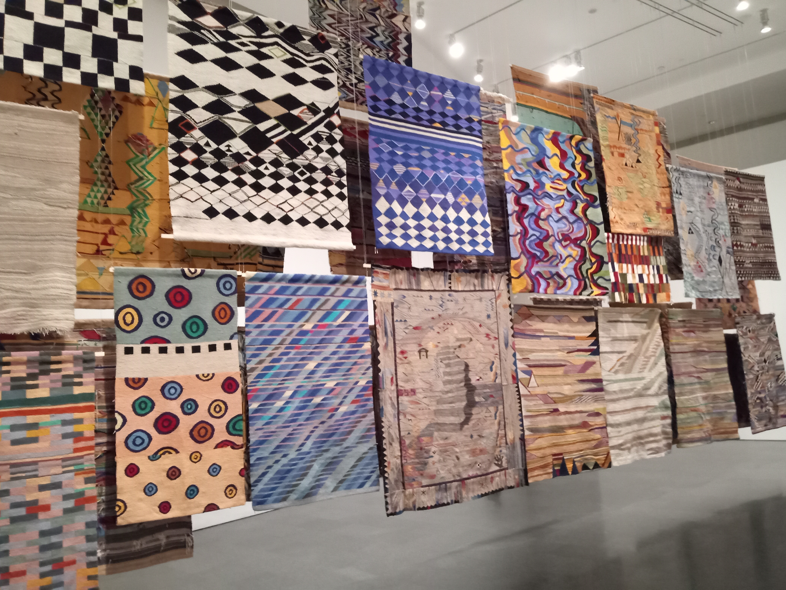
Then we descended to the 2nd floor to meet the permanent collection. Our basic response overall is that neither of us get it. The early 20th century stuff felt like I could make some connection and it was lovely to see some Calder mobiles in person. Separate from the whole art thing I was very intrigued by a reference to a range of experimental schools in Barcelona that developed some different ways of thinking about the learning process. The image below is the one that captured my interest initially.
Escuela del Mar
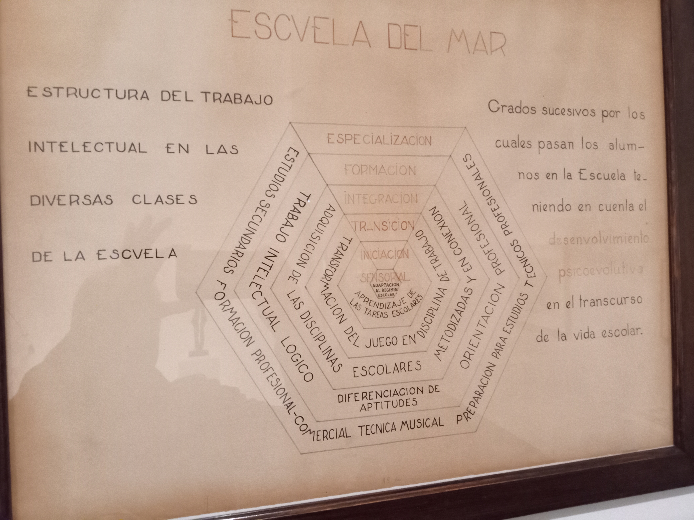
It appears that the Escuela del Mar in Barcelona was part of a broader educational movement in the early 20’s. They are associated with the Escuelas del Bosque (Forest Schools) and the perhaps the Steiner Waldorf movement. Rosa Sensat established a forest school on Montjuic which is still operating today. The Escola del Mar was bombed by Italian fascists but apparently still exists in the Guinardó neighborhood today at C Gènova, 12. Perhaps someday I’ll try to track down some of the ideas these schools explored and whether there is something to be learned.
Because the rain was getting heavier we opted to come on home and spend the evening resting.
22/4/2022 Friday¶
Manlleu: This exploration started with a link to the guide to the Museo del Ter that popped up when I was looking for various agriculture and technology possibilities after our visit to Parç Agrari on the Rio Llobregat. Glancing though the guide it seemed like the museum was focused on the IXX century and the industrial revolution and had some of the machines that I’ve heard about but never seen. Manlleu itself seemed like a more rural town that aligned with our interest in trying to see Catalonia outside of Barcelona.
The day started with the usual challenge of trying to figure out how to get to the right platform and purchase an appropriate ticket for the trip. Online it seemed clear that Rodalies R3 was the train that would take us all the way to Manlleu or we could take the 455 bus (Sagales) from Estacio del Nord. Travel time was essentially the same so we opted for the train. R3 connects at the Arc de Triomf station there were mulitple trains from 6:00 to 8:00 and then less frequently after that. We headed to Arc de Triomf at 7:00 thinking that would give us enough time to sort out the system which turned out to be a good plan. The first confusion was how to get from the metro trains to the rodalies trains. The only time we had done this before was when we went to Montserrat and that seemed like it might be atypical. The first thing we did when trying to find the rodalies trains was go through a door in the middle of the platform (via) that led us to the rodalies platforms. Seemed like a good thing until we went up the stairs to try and get to the ticket machines. We couldn’t get out through the rodalies (big R on the turnstile) turnstiles. We tried a couple of different places and eventually found a turnstile where there was an employee nearby we could hail. He passed up through the turnstile and we went and got tickets. 7€ each way which seemed totally reasonable for a 90 min train ride. You’d think this might be the end of the fun but no, it wasn’t. We went over to pass back through the turnstile to get to the platforms and looked up at the monitor and could only see R1 and R4 times listed on the monitor. The station employee assured us that Via 1 was the correct platform and Dawn noticed a sign that indicated R3 (our train) also outbound on Via 1. Feeling a bit insecure we headed down to Via 1. Our train was supposed to arrive at 7:56. We did notice that the platform signage kept updating with the next train coming in so it felt like it might indicate an R3 train coming next but that didn’t happen until nearly 8:05. I was definitely beginning to wonder if I’d messed it up again.
Note to self: The metro and the rodalies are related but separate. When making the transfer exit the metro which may mean going above ground and THEN look for the signage for the rodalies. Tickets will be available somewhere near the turnstiles. The rodalies tend to have entry AND exit turnstiles. Not sure why our tickets wouldn’t let us get off a couple of stations early to have a smoother transfer home – perhaps since we started at Arc de Triomf it really wanted us to finish there. Still more to learn but feeling better.
It was interesting to watch the suburbs change and then give way to individual communites as we went out. There is a part of the line near Figaro where it passes through one of the coastal ranges and it feels very coastal rain forest with cliffs poking out here and there. On the other side of Figaro as we came into the next valley there were lovely fields of bright yellow rapeseed constrasting with the dark green of the grass fields. Dawn took images for possible references and I’ll see if I can post one here. Vic is the capitol of the Osona region and clearly a local destination for travelers on the train. Both going and coming Vic was the place where the largest number of folks got on or off. We rolled into Manlleu a bit before 10:00 as planned since the museum opens from 10:00 to 14:00. Fascinating to walk off the platform around the tiny train station with maybe half a dozen other people and not feel very clear about which way to go. In front of the train station was a rambla that looked like it might head into town (not convincingly though) so we went that way.
Canola (rapeseed) fields near Vic
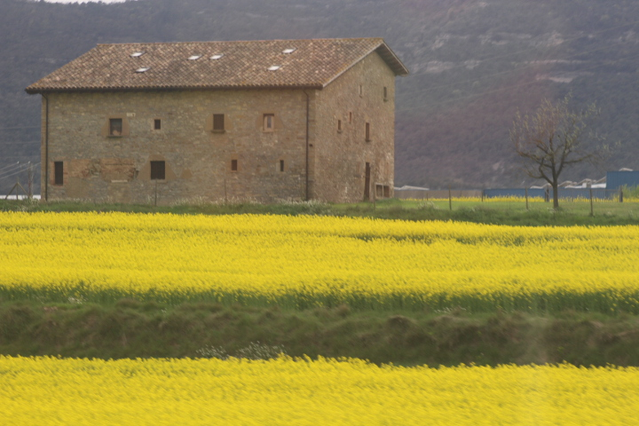
At this point in the day we attributed the general quietness to being midmorning but it was still slightly surprising to be walking down what seemed like significant street and yet we saw almost no cars or people. We did stop for coffe and coissants in the first couple of blocks but it was the only open business we saw for quite some time. We were really expecting it to be more like Barcelona with a small coffee shop on every other block. I was also intrigued that this panderia didn’t have a full scale espresso/coffee machine but just a small automated one like we see in doctor’s offices. Even the smallest place in Barca has a serious coffee machine. Hmmm….. As we walked into town after coffee we noticed this remarkable house on one side of the road (the address is around Avinguda de la Diputació 86) that seemed to reflect the mosaic traditions of Guadi. As we walked around the house it was more and more amazing. Somebody was passionate about assembling river rock (mostly) into familiar forms from Catalunya including the Sagrada Familia, various Catedrals, other forms and stories. Some images below but you need to zoom in and look at the details for fully appreciate the effort. Later when we talked to David and Jordi at the museum they said that the owner was just someone who has had a passion for this all his life. Sounds exactly like the guy who build Petersen’s Rock Garden between Bend and Redmond.
Passion for Rocks (1)

Passion for Rocks (2)

Passion for Rocks (3)

Shortly after (or possibly just before) as we walked down the rambla we caught this lovely glimpse of dogs in the window watching us all go by. How many dogs do you see?
House of Dogs.
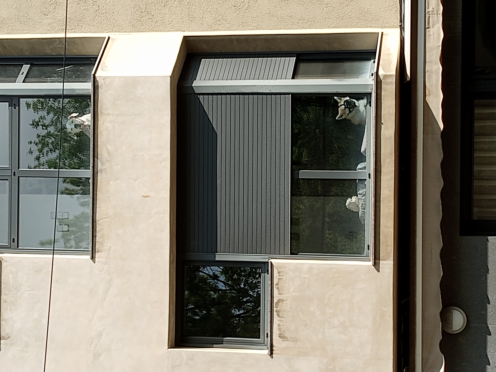
We slowly wound our way down to the river which is bordered by a lovely park/camino. Just before we got to the river we crossed over a substantial canal. 5 m wide and maybe 1.5 m deep moves a lot of water. All the buildings on the river side of the canal looked very much like factory or manufacturing buildings. Mnay were a bit out of repair. Shortly we arrived at the river bank which is very beautiful with a high bank on the far side and bordered with trees. Today, for whatever reason, it seemed like every student in every school (all ages) were down at the park next to the river with a drawing board and a piece of paper. Perhaps they were all stir crazy after a week of rain. Whatever the reason it was fun walking through all the young people. They did seem a little less jaded than some of the kids we see in Barcelona. Perhaps that’s just wishful thinking on my part that rural kids are more chill than city kids.
Half a km downstream we came upon the Museo del Ter which was what provoked this excursion to Manlleu. Out front was this lovely schulpture.
Museu del Ter: Sculpture

The museum itself is a renovation and add on to an old factory building. Really nice renovation.
Museu del Ter:

David, at the front desk, was wonderful and welcoming and apprently curious how we had arrived at this museum being visitors to Barcelona. I suspect few traditional tourists find their way from Barcelona to Manlleu but as you will see it makes a lovely day trip that is accessible from public transportation. After chatting briefly we took the tablets he offered and loaded with the English language exhibit guide and headed into the museum. I would note that the staff at the museum have put a remarkable amount of effort into creating this same guide in multiple langauges and organizing everything to tell the story of Manlleu and the fabric industry along the River Ter. It was seeing this guide that got us thinking about visiting Manlleu. We had only gotten a few steps into the lower level which explores the technology of the fabric industry in Manlleu when David caught up with us and wondered if we would assist in the development of their guide by participating in some pictures. Here is one of those images. (David - you have our formal permission to use this image of us in museum materials if it would be helpful!)
Using the Guide.
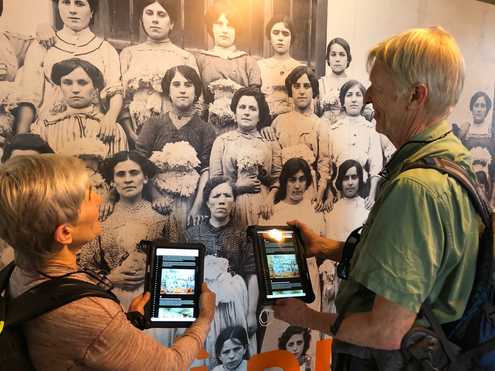
Returning to our explorations of the very cool machines and technology we hardly made it another 50 steps before Jordi (below) came and found us to ask if he could show us how the water powered drive system works before he had to go to another task.
Jordi
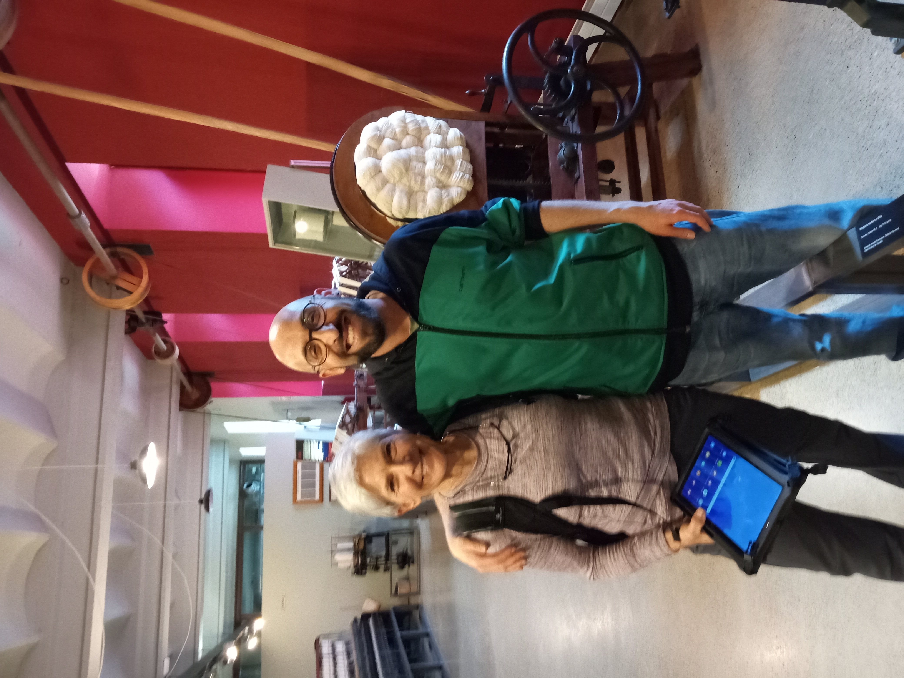
Like David, Jordi is also passionately engaged in the project of sharing the history and technology of his home with the public. His father worked in these mills before they ultimately closed. Jordi may be a historian but he is also an articulate spokesperson for the rich interplay between work, technology, and social development that the community of Manlleu has lived. I’m afraid that there is a tremendous amount that he discribed and connected for us that it may take me a while to unpack most of it. Graciously Jordi wanted to practice his English on us (hardly needs practice – its excellent) and allowed me to mangle Spanish as I attempted practice in return.
The basic thesis is that as people around the world figured out how to use water to turn a shaft, whether for grading grains or for driving belts, and industry built up around it. Overshot or undershot wheels like we saw at the flour mill in Vit Fleur in Normandy were replaced by Fontaine turbines. These cross flow turbines have a vertical axis. I would love to understand better how they are constructed since it was impressive to see it in action. Jordi said (I think) that the blades of the turbine in Manlleu are wood and can be replaced individually. Major rebuilds are apparently only needed every 10 years or so which is quite impressive. A quick google search did not bring up a lot of information so I will need to table that for a future exploration but I am very curious.
It is quite dramatic to watch the water being admitted to the drive chamber of the turbine and see it get started. The volume of water is quite impressive. I have a video of the process of starting the system up but it needs some editing and uploading to youtube. For now here is a placeholder.
Video to come:Starting the Turbine
At this point in the process the drive belt attached directly to the turbine shaft (vertical) is coupled to another drive wheel via friction. In the image below (taken from the guide) you can see this coupling in the top left. There is a spring which pulls the two drive wheels together creating sufficient friction to hold them together. This is actually a slip coupling or clutch which is very wise when you are connecting two drive systems. It allows the two drive wheels to slip relative to each other which both brings the new belt up to speed over a little time and provides a safety margin if something were to jam the drive shaft in the factory. Very interesting.
Horizontal drive wheel coupling
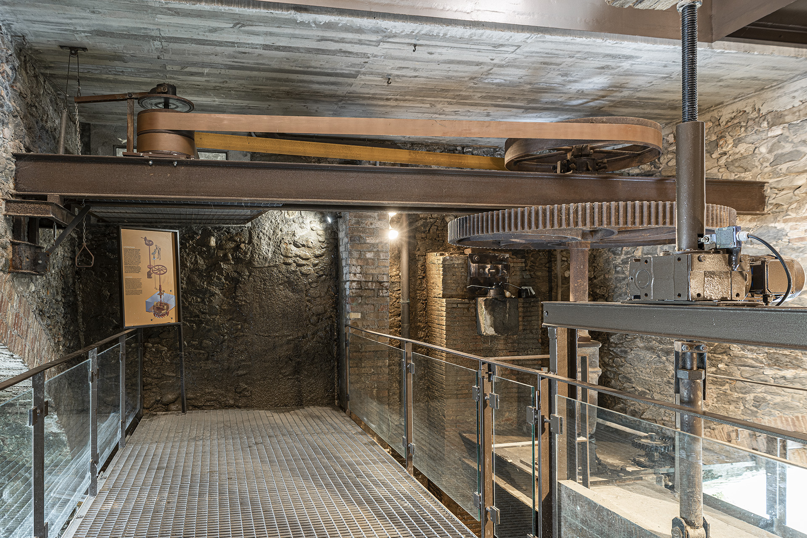
Jordi then showed us how the drive shaft connects to and runs the 4 machines they have set up in the museum for this purpose. All the chosen machines are fairly low load machines which is probably a great choice for safety and demonstration purposes. Again, I have the videos but need to do some processing before linking them here. Below are placeholders.
Video to come:automatic skein winder
Video to come:shuttle winder
Perhaps most fascinating is the machine for combining multiple threads into a heavier thread. Jordi was absolutely on target by describing it as a dance and they have clearly fielded many questions about the actual pattern. To see the pattern you have to slow the dance down which I will attempt to do in the second video. Jordi demo’d it by hand cranking the machine which brings the speed down to a point your eyes can follow an individual spindle. We’ll see if our memory is correct about what the spindles are doing. I suspect Dawn’s visualization that it is like the maypole dance where each person (spindle) travels completely around the pole is correct.
Video to come:heavy yarn winder
Video to come:yarn winder slow
We chatted with Jordi for a little while longer before he had to go. He noted that many of the building owners have realized that the turbines along the edge of the Ter river can now be connected to generators to produce steady modest amounts of power for the utilities. The factory in which the museum lives has a second turbine which is connected to a generator in this way and generates electrical power which probably mitigates costs for the musuem.He pointed out that this has raised some important social discussions about whose water is it in the river and why are the landowners/factory owners the only ones who should benefit. As more and more water is removed from the river for agricultural and human uses and the climate changes how do we as a society find a balance between those competing interests.
Jordi also spoke a bit about the importance of the political movements that originated among the factory workers in this region during the IXX century. In some ways liberal progressive democracies are the children of the labor movement and it’s effort to better the lives of the working class. Fascinating that these days, at least in the US, the working class are believed to be completely anti-socialist and generally opposed to the government providing basic support for peoples lives. It’s probably been too long since most of us have been opressed by the powerful and we’ve forgotten some of the reasons for community activism. Jordi pointed out that both Catalonia and Bilbao were centers of industrialization which led to them being centers of political activism and reform. Thank you to the Basque and Catalan people!
The last comment that Jordi made that I was intrigued by had to do with the design and manufacturing of the machinery. He noted that all of the machines were replicas of machines designed and built in England. In a way that makes sense and is a common and reasonable response to catching up with technology being developed in other places. Its why reverse engineering exists whether you’re taking apart an iPhone or a weapon system to see how it works. What’s surprising to me is that the level of workmanship is very high for all of the machines in the museum and most were built locally by Catalan fabricators. It seems surprising to me that such skilled craftsmen would not have made improvements as they made copies of the English machines. There is demonstrably nothing wrong with the technical skills of the people of Catalonia so why wouldn’t they have made at least small changes to improve the performance or reliability of the machines. Seems like this should be somebody’s research thesis if it hasn’t happened already.
We toured through the rest of the museum now appreciating the relationships between the people and the factories even more. Lots of very cool machinery that the museum has in some cases found in other European countries and brought here to complete the picture. Reminds me a lot of the Museum of the Rockies when I was a kid and you could get close to all the tools. The second floor of the museum is a focused on the social impacts of the factory system and is very interesting, intellectually, but would probably be more of a challenge for younger visitors. Many of the artifacts are still very cool. The old galvanometers in wooden cases are always cool and it’s fascinating to see a well organized collection of conducting cables from this period. The croquet mallets are much more robust than modern ones which was interesting. I don’t know what the small cases are for (snuff perhaps?) but they were beautifully made.
Electrical instruments IXX century
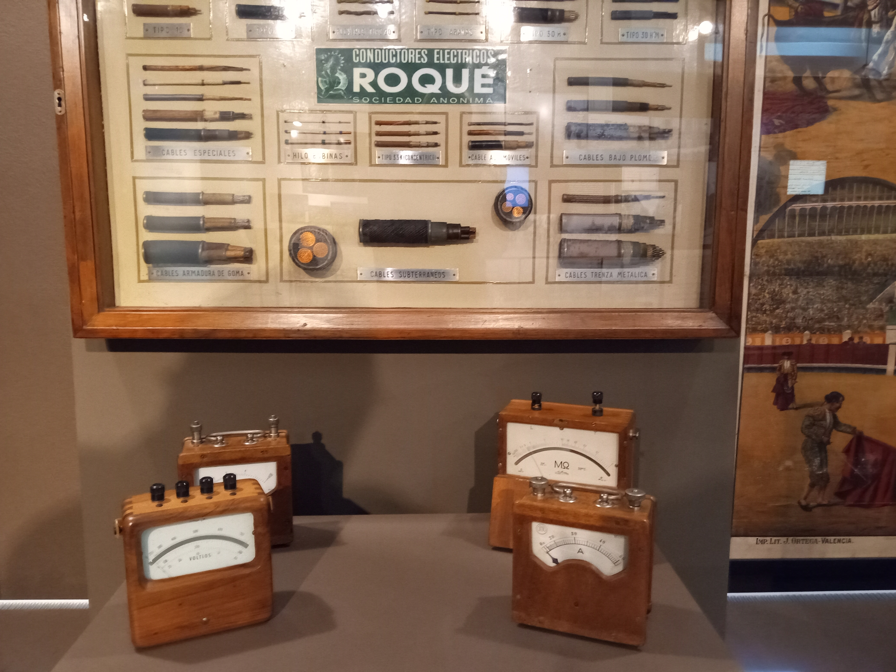
Croquet set..
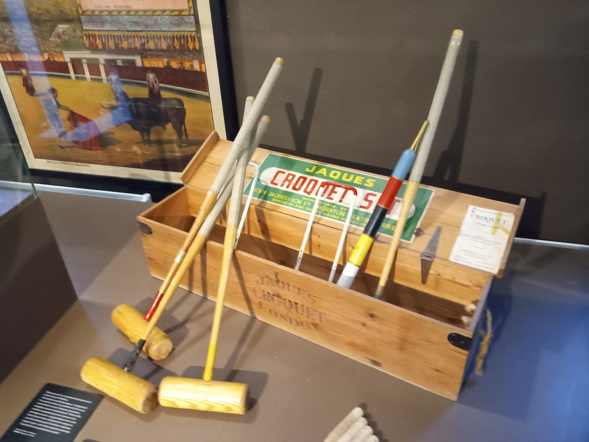
Mystery boxes..
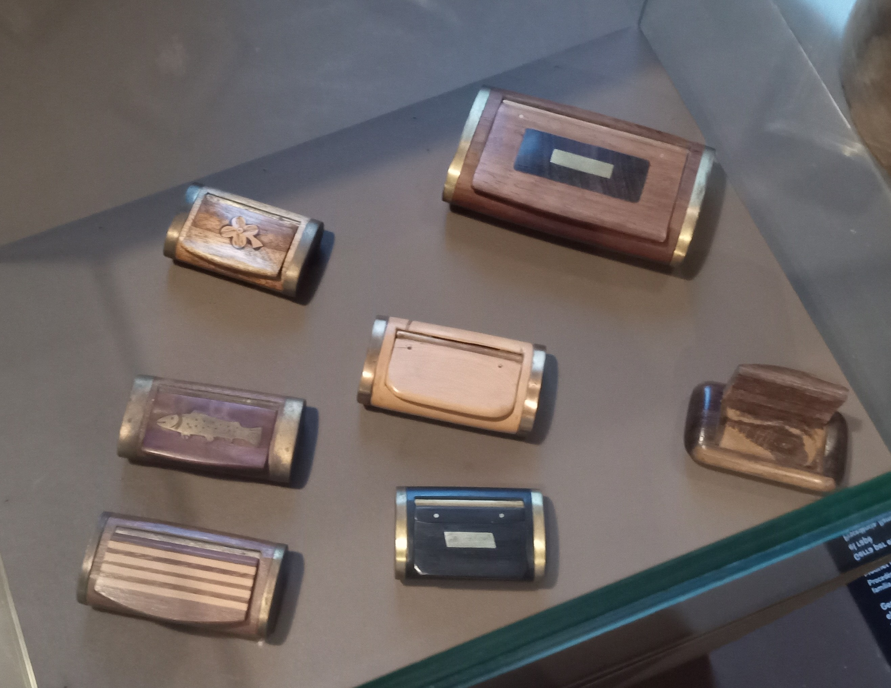
After thanking David (Jordi had already left but ‘Thank you Jordi!’) and trying to buy a mask to support the museum we headed out to explore more of the city/town on foot. David wouldn’t let me purchase the mask so I’ll have to figure out how to support their efforts some other way.
When we got outside Dawn headed across the footbridge to take some pictures of the livestock on the other side of the river. The footbridge is really lovely but would make an american liability lawyer salivate. One of those clear differences between Europe and the US. If you’re too silly to make good decisions that’s on you not the builder/owner. Accidents happen but stupidity is not an accident.
Ter river and crossing.

We sat in the cool breeze on the other side of the river and had a snack. Definitely removed from the hustle and bustle of Barcelona. Lovely. After the snack we continued along the other side of the river (as suggested by David) and returned via the bridge that casually notes on it’s plaque that it was first constructed over 600 years ago in 1401. We then walked along the canal back towards the museum because I wanted to check out the community gardens that were behind it. When we finally found the entrance it was actually locked. Apparently you sign up for the plots and they issue you a key. Seems reasonable.
From there we wandered up through town aiming to get to a restaurant that David had recommended. We eventually found our way to Sambucus next to the Mercat Municipal Manlleu. Along the way we passed a small mosque at afternoon prayers – whole lot of shoes out front. Connected back to Jordi’s comment that working class areas are often the places that end up welcoming and integrating immigrants into their new country. On a good day we recognize the fun and creativity that such diversity brings to us all and on bad days I’m sure there are plenty of tensions. We had a light lunch at Sambucus which was very tasty (Dawn had a sea bass and I had a pasta dish). The next table over was a German who had lived and worked in the US and now married a Catalon woman and they live in Manlleu. Conversation was a steady blend of English and Spanish throughout lunch.
After lunch we walked back to the train station to check the schedule for our return journey. That’s when I noticed that not all the R3 trains go to the end of the line. Some only go as far as Vic and others finish at various points along the line. Only one or two a day go all the way to the end which must be practically to the Pyrenees. Explains why the scheduling of which train to catch was relevant. We had a couple of hours so we walked a loop out through the fields near Manlleu. Just a mile or so loop and we meet a handful of other folks out for a stroll as well. We were still very struck by the apparent absence of people. Yeah there were a few cars and folks walking from place to place but the whole place had a little bit of a ghost town feel. That feeling lifted a little when we walked by schools but still it was puzzling.
Fields near Manlleu
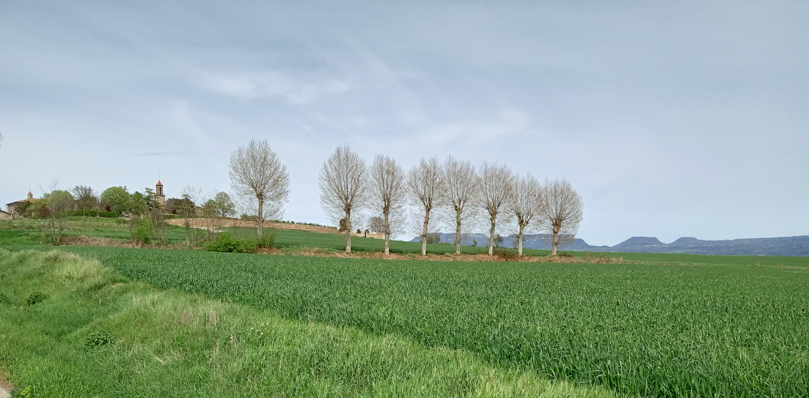
Another feature of Manlleu that was very present as we walked was the nearly complete absence of graffiti. In Barcelona the ground floor everywhere that we have been in town are businesses and graffiti is almost universal on these surfaces. In Manlleu much of the ground floor are homes with lovely wooden doors both for entry doors and garages. Only a few places had bars on ground floor windows and there was generally a sense of much more calm. Some very large and modern homes in particular areas and maybe a few cases of grafitti on some of the derelict spaces in the old part of town. Overall a very different feel.
We arrived back at the train station about 30 min before the projected arrival of the train. About 20 min before the train was supposed to arrive Dawn went back across the tracks to look for a bathroom that wasn’t there. When she came back out she realized that the train was pulling in and she was on the wrong side of the tracks. She let the train pull up to the platform and then hustled over behind the train and made it. Explains why people seem to arrive a bit before scheduled departure time. The train might be be late but it also might ben early. Yikes!
I had been noticing that we sometimes sat at individual stations for longer times. It appears that this is because there is only a single track for trains going in both directions except at stations where there are two sets of tracks. This means they need a short section of overhead power wire for this portion of the track. I realized that I had been seeing a mechanical tensioning device for keeping this short section of power wire tight without realizing it’s purpose. Now it makes sense. The tensioning device is pictured below.
Tensioning device for train power.
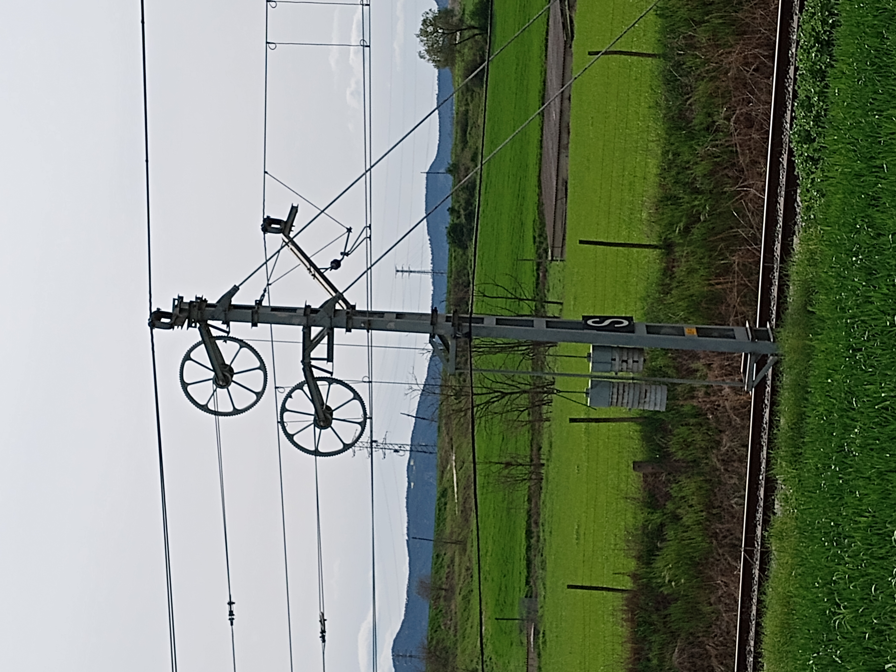
We had a gentle trip home with the train getting more and more full as we got closer and closer to Barcelona. Again, Vic was the place where most people joined us, but generally it just slowly added up. Nevertheless most people still had a seat which was nice.
23/4/2022 Saturday, Sant Jordi’s Day¶
Dawn finally got a good nights sleep last night. After breakfast I walked her over to Kettlebell practice but she wanted to see if she could find her way back on her own. Big step! As I walked home the flower vendors and book sellers were getting set up along C/ de Clot down by the Mercat. I picked up a rose for Dawn and a Pa de Drag (Pan de Dragon) which is a traditional bread with the flag of Catalonia baked into it. I was reminded that the inclusion of the wheat is part of the tradition that seems to not be consistently communicated.
Sant Jordi Tradition
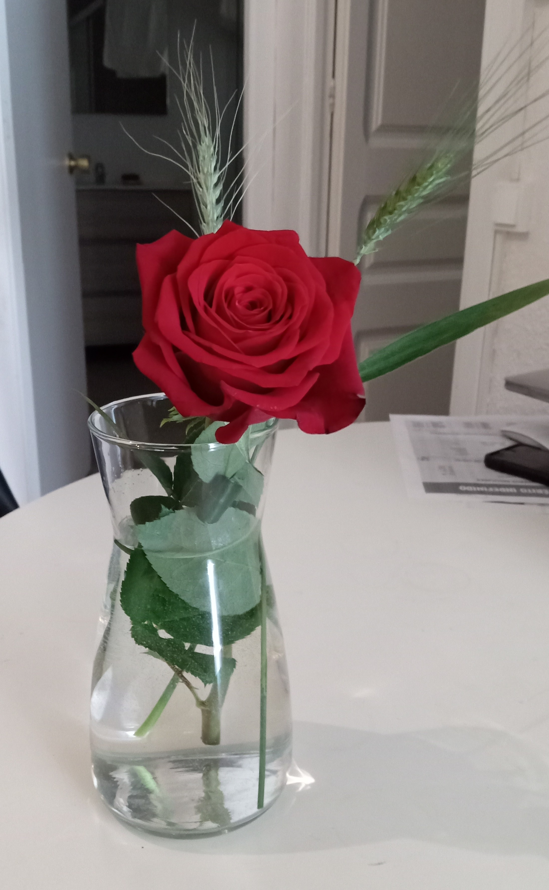
Pa de Drag (Pan de Dragon)
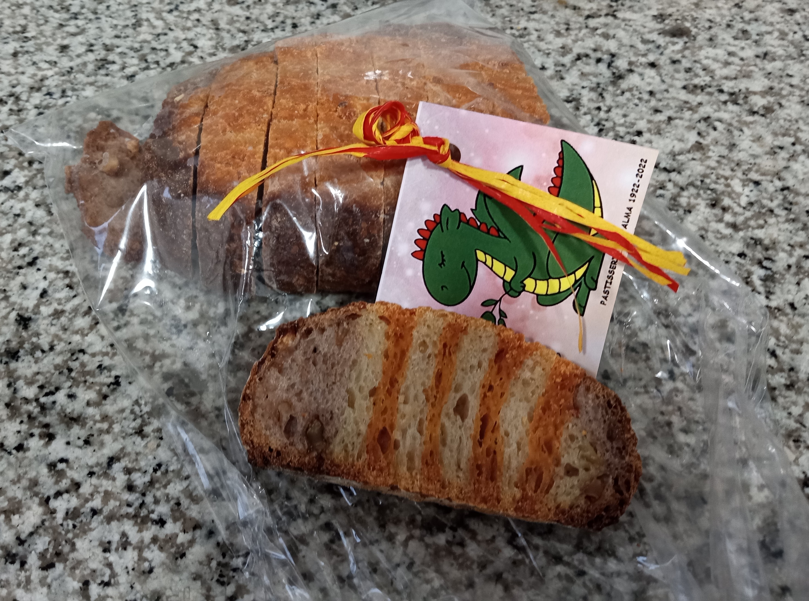
Came home and started working on this journal since yesterday is going to be a long discussion. Dawn called when she left Kettlebell and I walked towards her to be supportive. She met me at La Farinera and we walked home. Huge step for her.
We had lunch as were considering heading out to see what was happening on La Rambla when the wind came up and the heavens opened up with a pouring rain. Huge drops and lots of water. It seems like after each storm it would clear and just as we were thinking it was reasonable to step out the next stormlet would come in. Lots of thunder and even some hail for crying out loud. Perhaps we won’t get out again today though it is supposed to settle down in the early evening. Must be a total pain for all the booksellers and rose sellers whose booths are being whipped by rain and wind. We saw once rose seller have a large vase blown off their table to shatter on the concrete and a sun shade umbrella at a bar got blown over on the next table and it was hard to get upright with the strength of the wind.